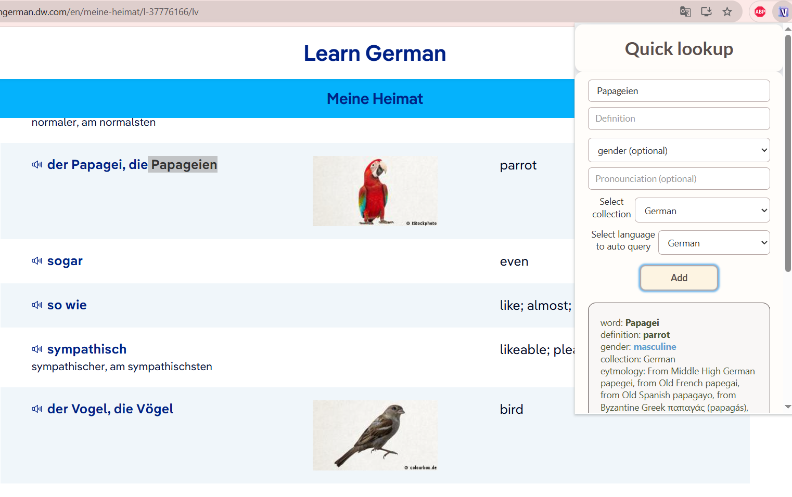
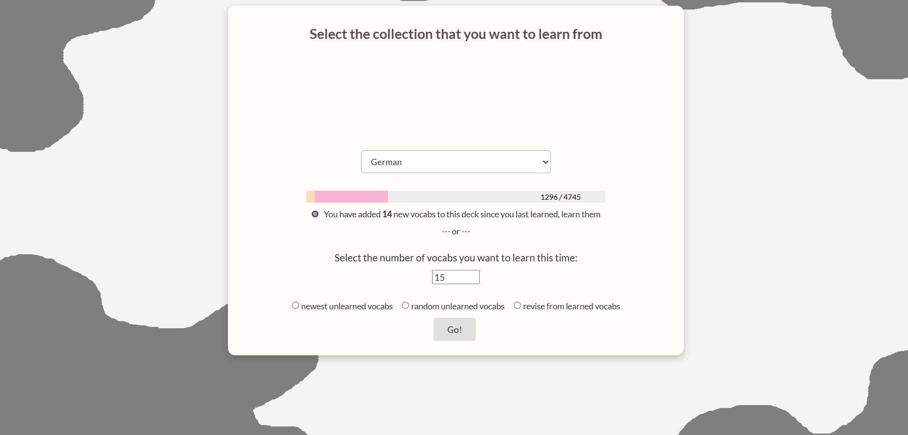
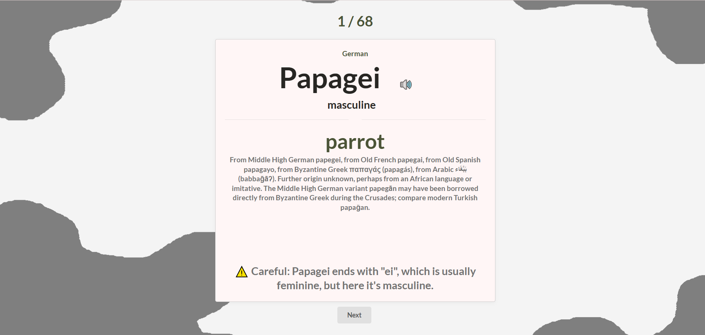
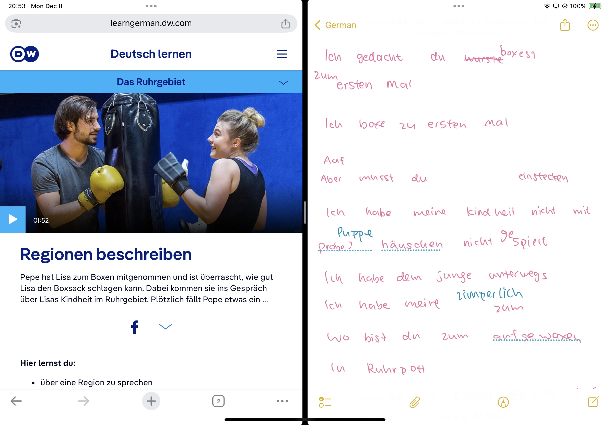
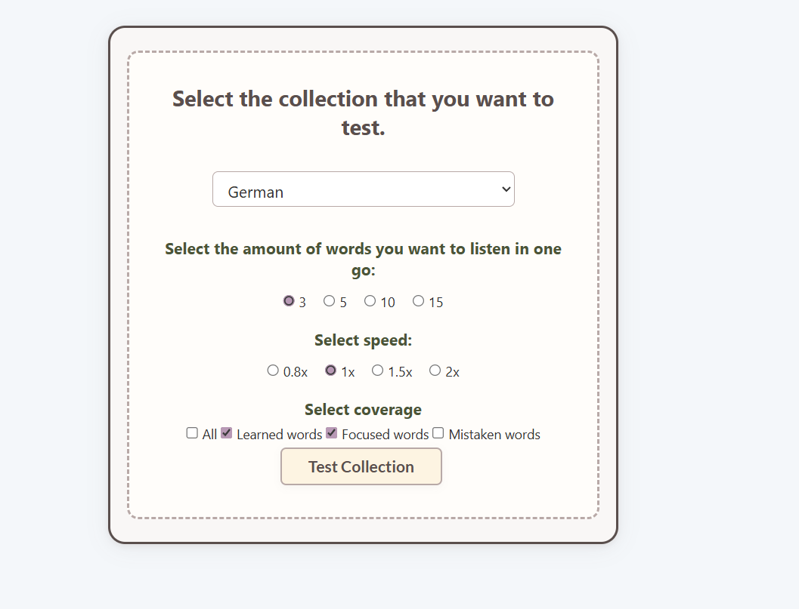

First I started learning with Nicos weg A1, and I go over 1~2 lessons each day. I improved FLIZ along the way to suit my study, and I got 96% in A1 after ~40 days of studying. And then after resting for 2 weeks I kept on with Nicos weg A2. Somehow, I have found out that there was not much to learn in the A2 material: after like 20 lessons in I did 3~4 mock tests of A2 including goethe's offical mock test and got like a 90% average. So i have decided just look at the grammar points like past tenses and just to go through B1 straight away. I have gone over B1's materials in a month and a half and after 2 weeks of revising I have got 82% in my B1 exam. I made this extension to learn latin initially but to pass German test I have also added a lot of useful features. Every feature I put in this extension is because I as a language learner need it.
First I walk through the vocab sections of nicos weg, use the search feature to add unlearned words in my vocab deck. And then I go through them using the learning features. J  And then i go over then in my extension, it is like a duolinguo(?) style of learning so to learn repeatedly through quizzes. As you can see i have gone over 1296 words, the orange bar means the amount of words I have gone over twice.  
The extension will detects words you just added automatically so its really easy to learn.After learning then I try to write down the conversation in nicos weg's video without looking at the subtitle and i listen to it multiple times to transcribe. With knowing a lot of words already it helped me to be more confident in learning. (Pink is what i wrote down, blue is corrction)  After having done 2 lessons with Nicos weg if I feel like it I will do some transcribing test with FLIZ. It randomly select words and speak and you can try to write them down. 